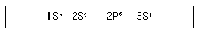
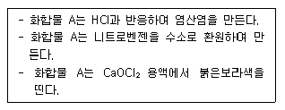

위험물산업기사 (2004-09-05 기출문제)
1과목: 일반화학
1. 질산칼륨 수용액 속에 소량의 염화나트륨이 불순물로 포함된 결정이 있다. 이 불순물을 제거하는 방법으로 적당한 것은?
- 증류
- 막분리
- 재결정
- 전기분해
(정답률: 75%)

2. 다음과 같은 전자배열을 가진 원자는?

- K
- F
- Ne
- Na
(정답률: 74%)
3. 다음 설명 중 염기가 될 수 없는 조건은?
- H+을 받아들일 수 있다.
- OH-을 내어 놓을 수 있다.
- 비공유 전자쌍을 가지고 있다.
- 물에 녹아 H3O+을 내어 놓을 수 있다.
(정답률: 54%)
4. 다음은 납축전지를 충전할 때 일어나는 현상을 설명한 것이다. 옳은 것은?
- 액의 비중은 변하지 않는다.
- 황산이 없어지므로 액의 비중은 작아진다.
- 황산이 더 많이 생기므로 액의 비중은 커진다.
- 납(Pb)이온이 많이 생기므로 액의 비중은 커진다.
(정답률: 29%)
5. 다음은 할로겐화 수소의 결합에너지 크기를 비교하여 나타낸 것이다. 올바르게 표시된 것은?
- HI > HBr > HCl > HF
- HBr > HI > HF > HCl
- HF > HCl > HBr > HI
- HCl > HBr > HF > HI
(정답률: 73%)
6. 단백질의 검출에 사용되는 것으로서 단백질에 진한 질산을 가하면 노란색으로 변하고 알칼리를 작용시키면 오렌지색으로 변하는 반응을 무슨 반응이라 하는가?
- 뷰렛 반응
- 닌히드린 반응
- 아담키바이츠 반응
- 크산토프로테인 반응
(정답률: 49%)
7. 다음은 벤젠에 관한 성질이다. 옳은 것은?(오류 신고가 접수된 문제입니다. 반드시 정답과 해설을 확인하시기 바랍니다.)
- 불을 붙이면 그을음이 많은 불꽃을 내며 타는데 그 이유는 H의 수에 비해 C의 수가 많기 때문이다.
- 이중 결합이 있으나, 분자가 공명되어 있어 불안정 하다.
- sp혼성오비탈을 형성하여 평면형 구조이다.
- 물과 같은 극성용매 잘 녹는다.
(정답률: 44%)
8. 수소 1g과 산소 16g의 혼합기체에 연소시켜 물을 만들었다. 이 때 반응하지 않고 남은 기체의 부피는 0℃, 1기압에서 얼마인가?
- 2.8L
- 5.6L
- 11.2L
- 22.4L
(정답률: 44%)
9. 2HNO3(묽은 질산) → H2O + 2NO + 3O 화학반응에서, 산화제의 당량은 얼마인가?(단, 원자량은 H=1, N=14, O=16 임)
- 21
- 48
- 63
- 126
(정답률: 23%)
10. 고체에 액체를 넣어 가열하지 않고 기체를 발생시킬 때 킵장치(Kipp Apparatus)를 사용한다. 아래 화학반응식 중 킵장치를 사용할 필요가 없는 것은?
- Cu + H2SO4 → CuSO4 + H2
- Zn + H2SO4 → ZnSO4 + H2
- CaCO3 + 2HCl → CaCl2 + H2O + CO2
- FeS + 2HCl → FeCl2 + H2S
(정답률: 27%)
11. 20℃에서 부피가 1L를 차지하는 기체를 압력의 변화없이 3배로 팽창할 때 온도(K)는 얼마인가? (단, 이상기체로 가정함)
- 549 K
- 659 K
- 769 K
- 879 K
(정답률: 60%)
12. 실험실에서 NaOH 1g이 250mL메스플라스크에 녹아 있을 때 NaOH수용액의 농도는?(단, NaOH는 100%로 간주하고 NaOH 분자량은 40 임.)
- 0.1N
- 0.3N
- 0.5N
- 0.7N
(정답률: 70%)
13. 아래 내용에 해당하는 화합물 A의 명칭은?

- 페놀
- 아닐린
- 톨루엔
- 벤젠슬폰산
(정답률: 63%)
14. 볼타전지에서 갑자기 전류가 약해지는 현상을 "분극현상" 이라 한다. 이 분극현상을 방지해 주는 감극제로 사용되는 물질은?
- MnO2
- CuS03
- NaCl
- Pb(NO3)2
(정답률: 65%)
15. 다음 중 커플링(coupling)반응시 생성되는 작용기는?
- -NH2
- -CH3
- -COOH
- -N = N-
(정답률: 83%)
16. 다음 화합물 중 황화수소(H2S)를 통과 시키면 노란색 침전이 생성되는 것은?
- Cd(NO3)2
- Cu(NO3)2
- Bi(NO3)2
- Pb(NO3)2
(정답률: 38%)
17. 염소산칼륨을 가열하면 다음의 반응이 일어난다. 2KClO3 ⇄ 2KCl + 3O2 이 반응을 이용하여 실제로 산소를 발생시키기 위해 MnO2를 가하는 이유를 가장 올바르게 설명한 것은?
- MnO2가 이 평형을 유지시킨다.
- MnO2가 들어가지 않으면 폭발할 염려가 있다.
- MnO2가 활성화에너지를 감소시켜 반응속도가 빨라진다.
- MnO2가 부촉매 역활을 하여 반응을 느리게하여 산소가 더 많이 생성된다.
(정답률: 49%)
18. 다음 중 용해도와 관련된 설명으로 옳지 않은 것은?
- 기체의 액체에 대한 용해도는 일반적으로 온도가 올라가면 줄어든다.
- 용매100g에 녹는 용질의 최대량을 g수로 표시한 것을 그 온도에서의 용해도라 한다.
- 고체가 물에 녹을 때 흡열반응을 하는 물질은 온도가 올라감에 따라 용해도는 작아진다.
- 압력의 변화는 액체나 고체의 용해도에 거의 영향을 미치지 않으나, 기체는 압력을 높이면 용해도는 증가한다.
(정답률: 44%)
19. 사방황, 단사황 등이 동소체임을 알아보기 위한 실험으로 가장 좋은 방법은 어느것인가?
- 밀도를 비교한다.
- 용해도를 비교한다.
- 연소생성물을 비교한다.
- 전기 전도도를 비교한다.
(정답률: 64%)
20. 아래 물질 0.1M 수용액 중 pH의 수치가 가장 큰 것은?
- CH3COOH
- HNO3
- HCl
- H2SO4
(정답률: 44%)
2과목: 화재예방과 소화방법
21. 할로겐화합물소화약제의 일반적인 특징에 대한 설명으로 옳지 않은 것은?
- 전기의 불량도체이다.
- 열분해시 생성되는 가스는 무해하다.
- 수명이 반영구적이다.
- 부촉매에 의한 연소의 억제작용이 크다.
(정답률: 52%)
22. 분말소화약제인 인산암모늄을 사용하였을 때 열분해하여 부착성인 막을 만들어 공기를 차단시키는 것은?
- HPO3
- PH3
- NH3
- P2O3
(정답률: 75%)
23. 포말소화기를 사용할 때 소화기 내부에서 일어나는 반응식으로 옳은 것은?
- Na2CO3 + H2SO4 → Na2SO4 + H2O + CO2
- 6NaHCO3 + Al2(SO4)3 → 3Na2SO4 + 2Al(OH)3 + 6CO2
- 2NaHCO3 + H2SO4 → Na2SO4 + 2H2O + 2CO2
- 3Na2CO3 + Al2(SO4)3 → 3Na2SO4 + Al2(CO3)3
(정답률: 49%)
24. 금속분(Al분)의 화재에 가열 수증기와 반응하여 발생하는 가스는?
- 질소
- 산소
- 수소
- 염소
(정답률: 77%)
25. 위험물 취급시 정전기 축적에 의한 불꽃방전 방지방법으로서 옳지 않은 것은?
- 접지한다.
- 습도를 높인다.
- 공기를 이온화한다.
- 공기를 건조시킨다.
(정답률: 66%)
26. 자연발화를 일으키는 인자로서 거리가 먼 것은?
- 열의 축적
- 표면연소
- 퇴적방법
- 발열량
(정답률: 38%)
27. 다음 위험물의 소화방법으로 주수소화가 적당하지 않은 것은?
- NaClO3
- P4S3
- Ca3P2
- S
(정답률: 60%)
28. 위험물 화재에 대한 소화방법으로 옳지 않은 것은?
- 증발 잠열을 이용한 주수로 냉각한다.
- 열전도율이 좋은 금속 분말로 온도를 낮춘다.
- 불연성 기체를 방사하여 산소공급을 차단한다.
- 불연성 분말을 뿌려 산소 공급을 차단한다.
(정답률: 74%)
29. 금수성 물질인 금속나트륨, 금속칼륨의 취급 잘못으로 화재가 발생 하였을 때 가장 좋은 소화 방법은?
- 마른 모래를 덮어 소화시킨다.
- 물을 사용하여 소화한다.
- CCl4 소화기를 사용한다.
- CO2 소화기를 사용한다.
(정답률: 79%)
30. 금속나트륨 화재에 적응성이 있는 소화설비는?
- 팽창질석
- 할로겐화물소화설비
- 분말소화설비
- 이산화탄소소화설비
(정답률: 66%)
31. 탄화칼슘 60,000㎏ 의 소화설비의 설치 소요단위는 몇 단위 인가?
- 10
- 20
- 30
- 40
(정답률: 72%)
32. 위험물 저장소의 건축물로서 외벽이 내화구조로 된 것은 연면적 몇 m2 를 소요단위 1 단위로 하는가?
- 50m2
- 100m2
- 150m2
- 200m2
(정답률: 77%)
33. 이산화탄소 소화약제의 저장용기 설치기준이 아닌 것은?
- 저장용기의 충전비는 고압식에 있어서는 1.5 이상∼1.9 이하, 저압식에 있어서는 1.1 이상∼1.4 이하로 한다.
- 저압식 저장용기에는 2.3MPa 이상 및 1.9MPa 이하의 압력에서 작동하는 압력경보장치를 설치한다.
- 저압식 용기에는 용기내부의 온도를 -20℃ 이상, -18℃ 이하로 유지할 수 있는 자동냉동기를 설치한다
- 기동용 가스용기는 20MPa 이상의 압력에 견딜 수 있는 것이어야 한다.
(정답률: 53%)
34. 옥내소화전설비의 기준으로 옳지 않은 것은?
- 옥내소화전함에는 그 표면에 "소화전" 이라고 표시하여야 한다.
- 옥내소화전함의 상부의 벽면에 적색의 표시등을 설치하여야 한다.
- 표시등 불빛은 부착면으로 부터 10도 이상으로 8m이내에서 쉽게 식별할 수 있어야 한다.
- 호스접속구는 바닥면으로부터 1.5m 이하의 높이에 설치하여야 한다.
(정답률: 80%)
35. 분말소화약제의 주성분이 틀리게 짝지어진 것은?
- 제1종 분말 - 탄산수소나트륨
- 제2종 분말 - 탄산수소칼륨
- 제3종 분말 - 제1인산암모늄
- 제4종 분말 - 탄산수소나트륨과 요소의 혼합
(정답률: 79%)
36. 분말소화약제의 특성에 대한 설명으로 옳지 않은 것은?
- 제1종 분말 - 식용유, 지방질유의 화재소화시 가연물과의 비누화 반응으로 소화효과가 증대된다.
- 제2종 분말 - 소화성능이 제1종 분말보다 떨어진다.
- 제3종 분말 - 일반화재에도 소화효과가 있으며, 수명이 반영구적이다.
- 제4종 분말 - 값이 비싸고, A급화재에는 소화효과가 없다.
(정답률: 41%)
37. ABC급 분말소화 약제의 주성분은?
- 탄산수소나트륨(NaHCO3)
- 제1인산암모늄(NH4H2PO4)
- 인산칼륨(K3PO4)
- 탄산수소칼륨(KHCO3)
(정답률: 78%)
38. 전역방출방식의 분말소화설비에서 분사헤드의 방사압력은 (MPa)얼마 이상이어야 하는가?
- 0.1
- 0.5
- 1
- 3
(정답률: 53%)
39. 간이소화 용구의 능력 단위가 1.0 인 것은?
- 삽을 포함한 마른모래 150ℓ 1포
- 삽을 포함한 마른모래 50ℓ 1포
- 삽을 포함한 팽창질석 100ℓ 1포
- 삽을 포함한 팽창질석 160ℓ 1포
(정답률: 78%)
40. 이산화탄소 소화설비의 설치 장소로서 옳지 않은 것은?
- 온도 변화가 적은 곳에 설치한다.
- 직사광선 및 빗물이 침투할 우려가 없는 곳에 설치한다.
- 방호 구역 외의 장소에 설치한다.
- 주위온도가 60℃ 이하이고 온도변화가 작은 곳에 설치한다.
(정답률: 69%)
3과목: 위험물의 성질과 취급
41. 위험물에 관한 표시사항 중 "물기엄금"에 관한 표지 색깔로서 옳은 것은?
- 청색바탕에 적색문자
- 청색바탕에 백색문자
- 적색바탕에 백색문자
- 백색바탕에 청색문자
(정답률: 73%)
42. 유황의 성질에 대한 설명으로 옳은 것은?
- 상온에서 가연성 액체물질이다.
- 전기도체로서 연소할 때 황색불꽂을 보인다.
- 고온에서 용융된 유황은 수소와 반응하여 황화수소가 발생한다.
- 물이나 산에 잘 녹으며, 환원성 물질과 혼합하면 폭발의 위험이 있다.
(정답률: 51%)
43. 다음 위험물 중 물과 반응하여 H2(g)가 발생, 화재 및 폭발 위험성이 있는 것은?
- 황린
- 적린
- 나트륨
- 이황화탄소
(정답률: 73%)
44. 다음은 위험물의 저장 및 취급시 주의사항에 관한 설명이다. 틀린 것은?
- H2O2 : 햇빛의 직사광선을 막고 찬 곳에 저장한다.
- MgO2 : 습기의 존재하에서 산소를 발생하므로 특히 방습에 주의한다.
- NaNO3 : 조해성이 크고 흡습성이 강하므로 습도에 주의한다.
- K2O2 : 물속에 저장한다.
(정답률: 77%)
45. 벤젠의 성질에 대한 설명 중 틀린 것은?
- 증기는 유독하다.
- 정전기가 발생하기 쉽다.
- CS2보다 인화점이 낮다.
- 독특한 냄새가 있는 무색의 액체이다.
(정답률: 64%)
46. 적린의 성상에 관한 설명 중 옳은 것은?
- 물과 반응하여 고열을 발생한다.
- 공기중에 방치하면 자연발화한다.
- 마찰 충격에 의해서 발화한다.
- 수소와 반응해서 발화한다.
(정답률: 34%)
47. 다음 물질 중 물과 반응해서 가연성기체를 발생하지 않는 것은?
- 금속칼륨
- 인화칼슘
- 탄화칼슘
- 산화칼슘
(정답률: 51%)
48. 다음은 칼슘카바이트(CaC2)의 성질을 설명한 것이다. 틀린 것은?
- 순수한 것은 백색의 고체이나 보통은 회흑색 고체 이다.
- 물과 반응하여 생석회와 에틸렌 가스가 생성된다.
- 고온에서 질소 가스와 반응하여 석회질소가 된다.
- 습한 공기와는 상온에서도 반응한다.
(정답률: 40%)
49. 다음 카바이트류 중 물(6mol)과 작용하여 CH4와 H2가스를 발생하는 것은?
- K2C2
- MgC2
- Al4C3
- Mn3C
(정답률: 27%)
50. 위험물 운반 용기 외부에 표시하여 적재하는 사항 중 수납위험물에 따라 주의사항을 표시해야 한다. 주의사항 표시가 올바른 것은?
- 제4류 위험물 - 화기주의
- 제3류 위험물 - 물기주의 및 화기엄금
- 제5류 위험물 - 화기엄금 및 충격주의
- 제6류 위험물 - 물기주의, 가연물접촉주의
(정답률: 54%)
51. 아세톤의 일반 성질에 관한 설명이다. 틀린 것은?
- 물에 잘 녹는다.
- 일광에 쪼이면 환원중합된다.
- 요오드포름 반응을 일으킨다.
- 아세틸렌을 녹이므로 아세틸렌 저장에 이용된다.
(정답률: 30%)
52. 가솔린의 성질 중 옳지 않은 것은?
- 증기는 공기보다 3∼4배 무겁다.
- 가솔린은 화학적으로 단일 물질이다.
- 휘발성의 무색 액체이지만 오렌지 또는 청색으로 착색된 것도 있다.
- 착화온도는 300℃이지만 상온에서도 계속 가연성 증기가 나오고 있다.
(정답률: 52%)
53. 다음 위험물을 취급할 때 충격, 마찰에 의한 위험이 가장 적은 물질은?
- C3H5(ONO2)3
- C24H29O9(NO3)11
- C6H2CH3(NO2)3
- C2H4(OH)2
(정답률: 54%)
54. 메틸알코올에 대한 설명 중 틀린 것은?
- 증기는 가열된 산화구리를 환원하여 구리를 만들고 포름알데히드가 된다.
- 연소 범위는 에틸알코올 보다 좁다.
- 소량 마시면 눈이 멀게 된다.
- 물에 잘 녹는다.
(정답률: 48%)
55. KNO3의 일반적 성질을 표현한 것이다. 틀린 것은?
- 무색 또는 백색 결정 분말이다.
- 차가운 자극성의 짠맛이 있고 산화성이 있다.
- 물에는 잘 녹으나 알코올에는 잘 녹지 않는다.
- 단독으로는 분해하지 않지만 가열하면 산소와 아질산칼륨을 생성한다.
(정답률: 58%)
56. 다음 중 알코올, 벤젠 및 에테르 등과 접촉하면 순간적으로 발열 또는 발화하는 위험물은?
- 삼산화크롬(CrO3)
- 질산나트륨(NaNO3)
- 요오드산칼륨(KIO3)
- 염소산암모늄(NH4ClO3)
(정답률: 30%)
57. 알킬알루미늄이 공기 중에서 자연발화할 수 있는 탄소 수의 범위는?
- C1∼C4
- C1∼C6
- C1∼C8
- C1∼C10
(정답률: 46%)
58. 다음 물질 중 공기보다 증기비중이 낮은 것은?
- 이황화탄소(CS2)
- 시안화수소(HCN)
- 아세트알데히드(CH3CHO)
- 에테르(CH3OCH3)
(정답률: 42%)
59. 1기압에서 액체로서 인화점이 21℃이상 70℃미만인 위험물은?
- 제1석유류 - 아세톤, 휘발유
- 제2석유류 - 등유, 경유
- 제3석유류 - 중유, 클레오소오트유
- 제4석유류 - 기계유, 실린더유
(정답률: 71%)
60. 동.식물유의 저장 및 취급방법으로 올바르지 못한 것은?
- 액체 누설에 주의하고 화기접근을 금한다.
- 인화점 이상으로 가열하지 않도록 주의한다.
- 건성유는 섬유류 등에 스며들지 않도록 한다.
- 불건성유는 공기중에서 쉽게 굳어지므로 질소를 퍼지 시켜 취급한다.
(정답률: 78%)